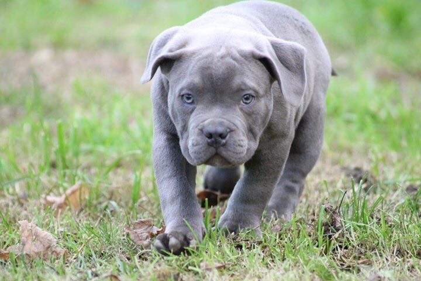
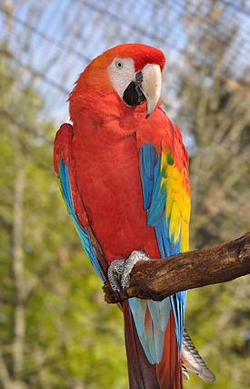
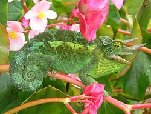

| Mascota | Raza | Descripción |
|---|---|---|
|

Perro de compañía de tamaño estandar, tipo moloso. |
American Bully |
Es una raza relativamente joven (1980) aunque su desarrollo y el reconocimiento de ésta no fue hasta 1990. De acuerdo con UKC, la raza se ha obtenido por medio de la cruza de las razas American Staffordshire Terrier, Pit bull(de el UKC), Bulldog Inglés, Olde english bulldogge, Bulldog americano y el Bulldog francés. Sin embargo, existen controversias con respecto a la participación del Pitbull ya que el UKC acepta registrar Amstaffs como pit bull terriers, y los perros del UKC utilizados en las cruzas eran de líneas de Amstaff. El ABKC(American Bully Kennel Club), por ejemplo, destaca la gran similitud entre el bully y el Amstaff, señalando como única diferencia la apariencia física.2 |
|
|

Género de aves de la familia de los loros |
Ara Macao |
Comprende 16 especies (nueve de ellas extintas) de origen americano que habitan desde las selvas de México hasta el noreste de Argentina, aproximadamente. Se alimentan de insectos y bayas y viven en los árboles |
|
| ||
|

Género de la familia de pequeños saurópsidos (reptiles) escamosos. |
Camaleón |
Los camaleones son una familia de pequeños saurópsidos (reptiles) escamosos. Existen cerca de 161 especies de camaleones, la mayor parte de ellas en África al sur del Sáhara. En América se llama a menudo camaleones a lagartos de la familia de los anoles, que no guardan ningún parentesco especial con los verdaderos camaleones. Son famosos por su habilidad de cambiar de color según las circunstancias, por su lengua rápida y alargada, y por sus ojos, que pueden ser movidos independientemente el uno del otro. |
|
| ||